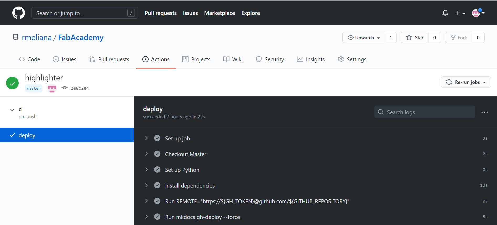

2. Project Management¶
Assignment¶
- Build a personal site describing you and your final project.
- Work through a git tutorial.
What's Git and GitHub? How can I use them with MkDocs? ¶
¶
And finally what is Markdown? 
I had a difficult time understanding the purpose of each one (Git, GitHub, MkDocs and Markdown) and how to use them together to create a site. Fortunately, in my work team, we were talking about interesting courses on Alura platform that we could take to improve our skills, and Git/GitHub course was one of them. I didn't conclude it, but it gave me a good knowledge about how Git and GitHub run.
My second move was searching examples of Fab Academy websites and the Cheng Pan's documentation give me a clear ideia about the structure.
Beyond it, my coworker LuÃs Henrique Fonseca has already built a website called Robozito using MarkDown, MkDocs, Git and GitHub, so it helped me a lot.
Research¶
-
Git is an open-source version control system, in other words, free of charge. It's used for creating a history of changes in the source code of software's development projects. It was designed by Linus Torvalds, the creator of the Linux operating system.
-
Github is a remote repository created as an online Git repository hosting service.
-
MkDocs is a fast, simple and downright gorgeous static site generator that's geared towards building project documentation. Documentation source files are written in Markdown, and configured with a single YAML configuration file.
-
Markdown was created back in 2004 by John Gruber (of Daring Fireball) as an easy way for non-coders to write in a format that could be easily converted into HTML. John Gruber defines Markdown as, “A text-to-HTML conversion tool for web writers. Markdown allows you to write using an easy-to-read, easy-to-write plain text format, then convert it to structurally valid XHTML (or HTML)“.
Creating a personal site: Windows operating system¶
Here the steps that I did to create my personal site:
-
Install Python 3.8.9;
-
Install Git and let the Git Bash terminal be started;
-
In Git Bash terminal, type
py --versionto see if the process worked out; -
For downloading libraries from Git repositories, it's necessary the package manager of python, PIP. Type
pip --versionto see if it has already been installed; -
For starting the website follow Getting Started page of MkDocs. It'll create all the basics files of the site on the local computer and give instructions of how to make changes in each page;
-
Changing the theme: my personal site uses a theme called Material for MkDocs that can be installed by the command
pip install mkdocs-materialon the computer system;
In
mkdocs.yml, change theme formaterialtheme: name: material -
For hosting it on GitHub follow the Allythy tutorial from "Deploy para o GitHub" topic until the end. It'll also generated the URL of documentation, similar of mine https://rmeliana.github.io/FabAcademy/;
-
Locally, on the computer, changes in the site can be seen by the command
mkdocs serveand URL http://127.0.0.1:8000/....However, once the files are on GitHub and it's made an update, a deployment process is needed in order to get updates published to GitHub Pages. For automating that, create a GitHub action following Parker Erickson tutorial;

Automatic GitHub deployment action Install all dependencies in order to deploy the updates.
- Create a file called
requirements.txton the root of the main folder on the local computer and copy the text below in it.
-
Requirements text
mkdocs>=1.1 Pygments>=2.4 markdown>=3.2 pymdown-extensions>=7.0 mkdocs-material-extensions>=1.0 -
Add the command
pip install -r requirements.txtintomain.yml(this file is in .github folder):- name: Install dependencies run: | python -m pip install --upgrade pip pip install mkdocs-material pip install -r requirements.txt
- Create a file called
Advice¶
Mardown editor and Git IDE¶
I've started using Notepad++ for changing the pages of my personal site. It's an easy-to-use software and has already been installed on Windows.
For working with Git and its commands I used the Git Bash, including through it and the command mkdocs serve I could see the changes before push to online repository.
Therefore, I needed to switch between the two software for adding or modifying some info. Reading the documentation of student Almir Kimura I discover another software that helps a lot with the process: Atom. With it, I can make adjust in my files, see a preview of Markdown and push updates to GitHub, everything on the same window. Below, the red square is the text editor, the green is the preview and the orange is the Git communication.
Image Alignment¶
I followed the references of Material for MkDocs for learning how to align images, but I realized that the commands didn't work as I wanted. The images didn't center, I couldn't have a caption below them, and left and right alignments put the pictures side by side with the text.
How I did to correct the commands
Just switch the word center to left or right for making different alignments!
<center>
{style="height:300px"}
</center>
{.center style="height:240px"}
stylesheet into the folder docs. Lastly, generate a file extra.css and copy the code below in it.
.center {
display: block;
margin: 0 auto;
}
.left {
float: left;
}
.right {
float: right;
}
<center>
{style="height:400px"}
<figcaption><b>Help</b></figcaption>
</center>
Result:
Display Videos¶
Videos
- Go to the Video page on YouTube and click on the Share Button.
- Choose Embed.
- Copy and Paste the HTML snippet in your markdown.
example:
<iframe width="534" height="300" src="https://www.youtube.com/embed/rptKlKZc7cs" title="YouTube video player" frameborder="0" allow="accelerometer; autoplay; clipboard-write; encrypted-media; gyroscope; picture-in-picture" allowfullscreen></iframe>
Result:
Create an issue on the GitHub repository and attach the video. Then copy the address video and paste into the code below. For more details about visit this site.
<center>
<video controls width="385">
<source src="https://user-images.githubusercontent.com/80481667/121596606-03fdfb80-ca16-11eb-96ab-62e88dee66aa.mp4"
type="video/mp4">
Sorry, your browser doesn't support embedded videos.
</video>
</center>